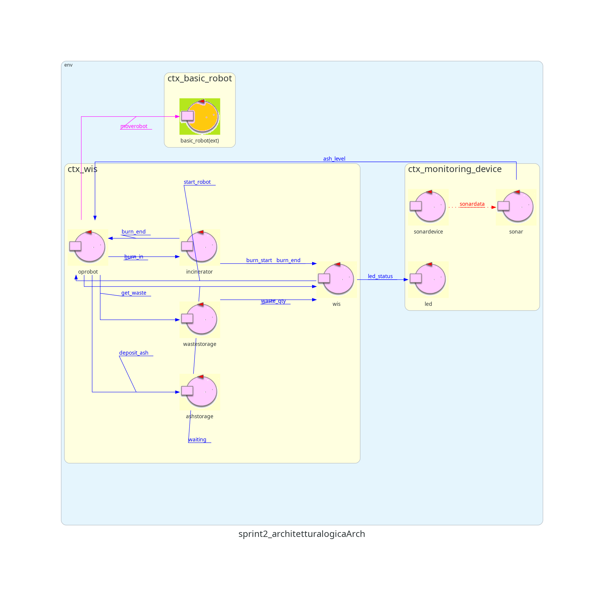

Sprint 2
Nello Sprint precedente sono state analizzate le problematiche e progettato il sistema relativo al Monitoring
Device, integrandolo con il Core Business dello Sprint 1.

Sprint Goal
Gli obiettivi di questa fase sono due:
-
Analizzare le problematiche relative alla GUI.
-
Progettare e realizzare la GUI integrandola con gli ciò che era stato prodotto alla fine dello sprint
precedente.
Analisi del problema
Come modellare la GUI e perchè?
Da requisiti è noto che il sistema debba fornire una GUI per mostrare alcune informazioni.
Le opzioni possibili possono essere le seguenti:
-
Utilizzare un sito web come GUI
-
Utilizzare un'applicazione come GUI
L'opzione scelta è la seconda, poichè in questo sarebbe accessibile da qualunque dispositivo senza bisogno di
particolari applicazioni e non la vincolerebbe ad una particolare architettura.
Inoltre utilizzando il linguaggio HTML si ha una semplice implementazione delle interaccie grafiche, grazie al
suo vasto repertorio di tag, compatibile con quasi ogni dispositivo.
Contesto della GUI
Per rispettare i principi della CleanArchitecture si è deciso di separe il sistema vero e proprio da eventuali interfacce esterne.
Inoltre, per potervi accedere via web, è necessario che la GUI sia posizionata su una porta diversa da quelle
già utilizzate all'interno del sistema, rendendola quindi un'entità dislocata rispetto alle altre.
Come interagire con la GUI?
Da requisiti, il sistema deve interagire con la GUI per mostrare alcune informazioni rilevanti.
Tra le varie opzioni, quella più adatta è quella di assegnare il compito al gestore del sistema, il WIS, che
dovrà inviare alla GUI le informazioni di cui necessita.
Come inviare queste informazioni?
Seguendo i principi della CleanArchitecture, le interfacce grafiche non dovrebbero sapere nulla del sistema con
cui sta interagendo e le informazioni necessarie al suo funzionamento
dovrebbe essere comunicate tramite un opportuno Adapter che fa da mediatore con l'applicazione.
Scegliendo di usare come GUI una WEB-GUI e QAK come linguaggio per il core business nasce una
incompatibilità tra i due linguaggi, poichè uno comunica con http/ws e l'altro con messaggi Prolog.
Si ha quindi la necessità di creare un middleware (Adapter) che faccia da mediatore tra i due linguaggi e che
converta opportunamente i messaggi di un linguaggio in un altro con la stessa semantica
Perchè utilizzare una facade?
Date le precedenti motivazioni si è ritenuto opportuno utilizzare un sistema già studiato in precedenza, ovvero
quello della
Facade
Interazione tra WIS e GUI
Come accennato, la responsabilità di aggiornare l'interfaccia ricade sul
WIS. Le opzioni possibili sono le
seguenti:
-
Creare diversi messaggi uno per ogni informazione rilevante.
-
Creare un unico messaggio che contiene tutte le informazioni ed inviarlo ogni volta che una di essere
varia.
Per comodità si è scelta la seconda opzione, che nel complesso va a semplificare l'interfaccia.
Tra le varie tipologie di messaggio, l'updateResource sembra la più adatta, in quanto, oltre rispettare la
semantica dell'interazione è lo standard di comunicazione con la facade.
Come prendere le informazioni di posizione e lavoro corrente dell'OpRobot?
Da requisiti, la GUI deve mostrare lo stato di OpRobot, in particolare la sua posizione nell'area di servizio e il lavoro che sta svolgendo.
Visto che queste informazioni non sono attualmente disponibili al
WIS sarà necessario aggiungere un ulteriore interazione al fine comunicarle.
Come modellare questa nuova interazione?
Per lo stesso motivo analizzato sopra, l'interazione viene modellata come una updateResource da OpRobot verso WIS
By Alessandro Piombini & Danilo Cavallini
Email:
-
alessandro.piombini@studio.unibo.it
-
danilo.cavallini@studio.unibo.it
GIT repo: https://github.com/Piombo4/ISS2024-WIS